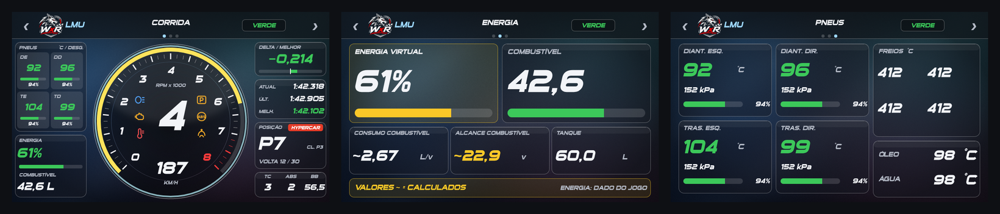
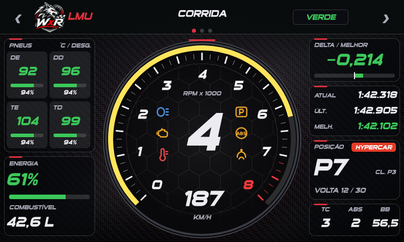
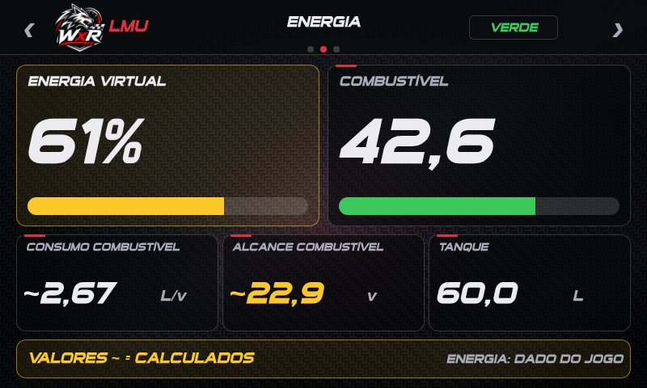
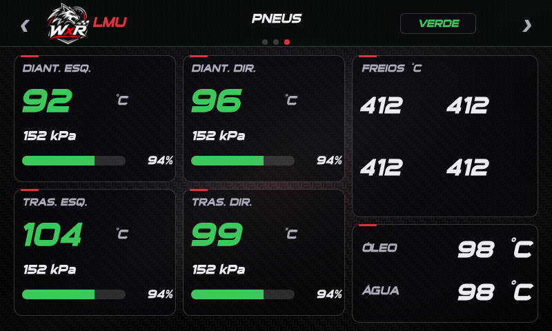

Dash para o Simagic MagicDash 4 (800x480, tela de toque) feito no SimHub (Dash Studio), em dois estilos: Glass Fumê (vidro escuro translúcido, tipografia esportiva Sui Generis e acento azul gelo; novo) e Sport (painel de carro esportivo): fundo de fibra de carbono, fonte inclinada Sui Generis (já vem com o SimHub), detalhes vermelhos e luzes de aviso dentro do tacômetro.

O cabeçalho traz o emblema WolfxRacing e o nome do jogo em texto. Os prints são prévias com dados de exemplo, geradas fora do SimHub; o dash real pode ter pequenas diferenças. Os logos oficiais do jogo não são distribuídos (marcas registradas): no lugar fica o emblema WolfxRacing, com o nome do jogo em texto.
dash/MagicDash4 LMU Glass.simhubdash (ou no Sport): o SimHub importa o dash (ou: Dash Studio > Import/Add dashboard).O SimHub não tem gesto de deslizar: toque na metade esquerda do cabeçalho para a tela anterior e na metade direita para a próxima (com volta ao início). Os pontos no cabeçalho indicam a tela atual.

Tacômetro central com marcha, velocidade e RPM x1000, 6 luzes de aviso (farol, motor, temperatura, limitador de boxes, ABS e TC), pneus (temperatura e desgaste), energia virtual e combustível, delta/melhor, tempos, posição na classe com chip da classe (Hypercar/LMP2/LMGT3...) e ajustes de TC, ABS e balanço de freio.

Energia virtual e combustível lado a lado (barras), consumo, alcance em voltas e tanque.

Quatro pneus com temperatura, pressão e vida; temperatura dos freios; óleo e água.
LovelyPlugin.TeamLINQ.Opponents) e, se existir, o NeoRed; sem eles mostra apenas a posição geral ("GERAL P#"). Confirmado com Lovely instalado.GameRawData.PlayerNativeTelemetry.mVirtualEnergy (0 a 1).~ são calculados/estimados; sem ~ são medidos pelo jogo.-- (nada é inventado).O .simhubdash é gerado por scripts Python em dash/tools (requer pillow, numpy; playwright só para as prévias):
cd dash/tools
python bg_sport.py && python bg_sport2.py # fundos (opcional: já vêm em assets_sport/)
python icons_sport.py # ícones das luzes (opcional)
python bg_vidro.py # fundos do Glass Fumê (opcional: já vêm em assets_vidro/)
python build_sport.py --so lmu --vidro # gera out_vidro/MagicDash4 LMU Glass.simhubdash
python build_sport.py --so lmu # gera out_sport/MagicDash4 LMU Sport.simhubdash
python check_sport.py # valida o resultado
Opções do build_sport.py: --so iracing|lmu|todos, --vidro (estilo Glass Fumê; sem a opção, gera o Sport) e --com-logos (somente para uso pessoal: troca o emblema WolfxRacing pelo logo do jogo; coloque o seu MD4_logo_<jogo>.png em assets_sport/; não publique o resultado). As expressões (JavaScript do SimHub) ficam em js_sport/: MD4_alertas.js (luzes, posição, energia), MD4_lmu_temps.js (pneus).
Dicas de desenvolvimento: abra o dash no navegador em http://127.0.0.1:8888/Dash?r=1#<NomeDoDash> (SimHub em execução) para ver as telas ao vivo e testar $prop(...) nas expressões.